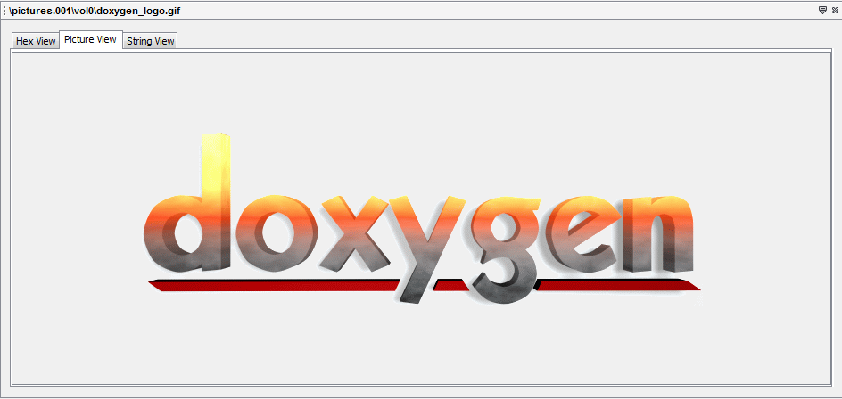

The Media Content Viewer will show a picture or video file. Video files can be played and paused. The size of the picture or video will be reduced to fit into the screen. If you want more complex analysis of the media, then you must export the file.
If you select an non-picture file or an unsupported picture format on the "Result Viewers", this tab will be disabled.
Here's one of the example of the "Media Content Viewer":
